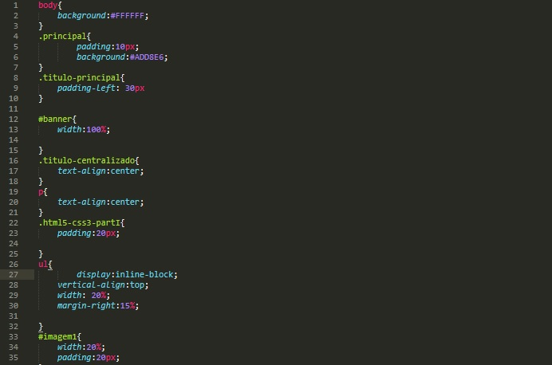

Olá pessoal, aqui é a Mah, e com todo esse lance de quarentena, ficar presa em casa, estar temporariamente sem trabalho (mas super ansiosa e no aguardo para o glorioso retorno), e principalmente morar numa latinha de sardinha, quer dizer, numa quitinete de 28m², resolvi retornar ao universo front-end e quem sabe tornar o Front-End em um trabalho ou quem sabe abrir minha empresa (pretenciosa, eu sei... mas é preciso sempre almejar mais).
Meu primeiro contato com o Front-End, que na época não se chamava dessa forma, não sei se existe alguma designação para ele, mas eu lembro que quem mexia com páginas eram mais conhecido como WebMasters ou Web Designers, pois quem desenvolvia o código também desenvolvia as imagens, layout e gerenciava a coisa toda, e com o passar do tempo tudo foi se ramificando e cada campo foi se setorizando e se tornando mais especializado, enfim... quando eu comecei eu era responsável por fazer tudo e acabou que no final das contas eu não era mágica em nada rsrsrsrs. Há mil anos atrás quando não existia HTML5 e muito menos CSS, eu arriscava e rabiscava algumas páginas da nossa internetê, inicialmente usava o Bloco de Notas, depois passei a usar o FrontPage, quando pensei em migrar para o Dreamweaver eu precisei decidir o que faria da minha vida e na época me pareceu mais acertado seguir com minha formação (administração), enfim aqui estou novamente a passos de tartaruga manca nesse universo de possibilidades.
Inicialmente eu pesquisei alguma coisa na web, assisti algumas aulas no youtube.... mas foi assistindo ao canal do Gaveta que eu tomei a decisão de fazer um curso pago e escolhi o curso da ALURA, e realmente recomendo, aidna não terminei, estou longe ainda, porém possuo base para fazer isso que vocês estão vendo que no caso é essa página.
O objetivo dessa página é aplicar todo o conhecimento que for adiquirido ao longo do curso, na realidade é a FORMAÇÃO em Front-End, e quem sabe caso alguém se interesse pode usá-lo para aprender um pouquinho sobre Front-End.
O conteúdo do blog será atualizado conforme eu for avançando na formação, assim como o layout do blog também... assim o bichinho vai ficando mais bonitinho conforme o tempo for passando.
Bora iniciar!
No primeiro módulo reaprendi o básico tanto de HTML5 quanto de CSS3. A primeira imagem que aparece nesse blog é justamente o código fonte, e na imagem abaixo consta o que seria o arquivo CSS, também desse blog.
Para início de conversa não se trata de um curso e sim de colocar em prática o que foi ensinado.
Ninguêm precisa obrigatoriamente fazer um curso para aprender os paranauês, porém eu indico o curdo da ALURA (link acima), pois as vezes ter uma didática, uma continuidade, uma estrutura naquilo que se está fazendo facilita, mas ao mesmo tempo é preciso paciência, pois demora... o lance é pesar o que vale mais a pena.
Bom, essa página foi criada utilizando os conhecimentos adquiridos no módulo I de HTML5 e CSS3, no curso que estou fazendo com a Alura. Minha próxima postagem será ao término do módulo II (ou quem sabe me empolgo e conforme for aprendendo vou alterando, não ainda).
Até a próxima!